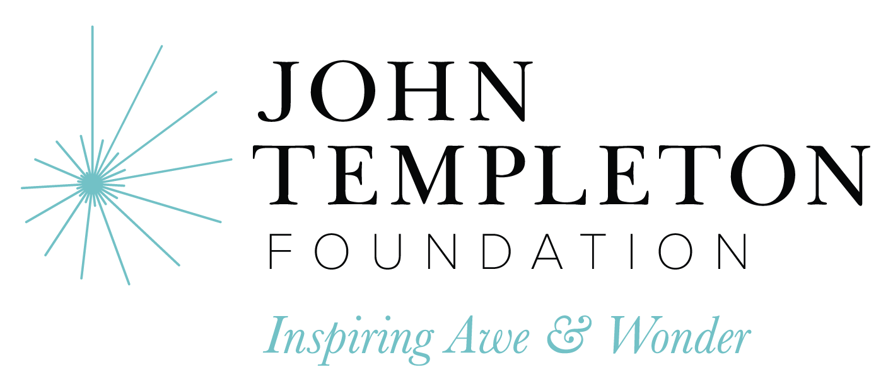
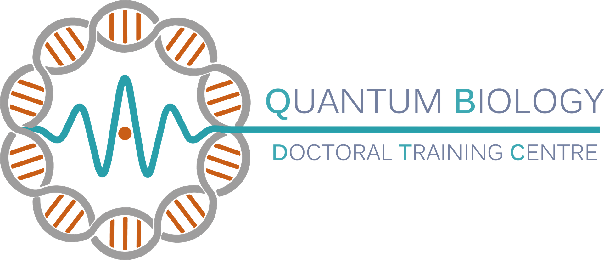
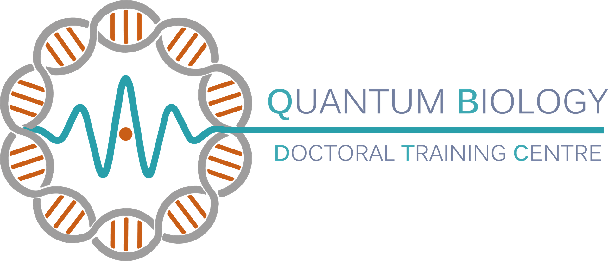

Funding
We gratefully acknowledge the support of the funding bodies for our scientific research.
 

Potential funding sources for postdoctoral research
- UKRI EPSRC Postdoctoral Fellowship
- UKRI STFC Ernest Rutherford Fellowship
- Leverhulme Trust Early Career Fellowship
- Royal Commission for the Exhibition 1851 Research Fellowship
-
The Royal Society Newton International Fellowship
- The Marie Skłodowska-Curie Fellowship
- The Human Frontier Science Program Postdoctoral Fellowship